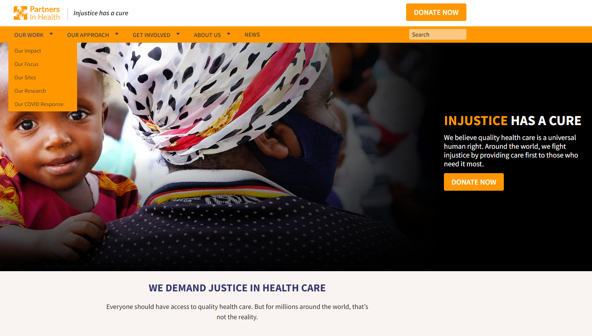
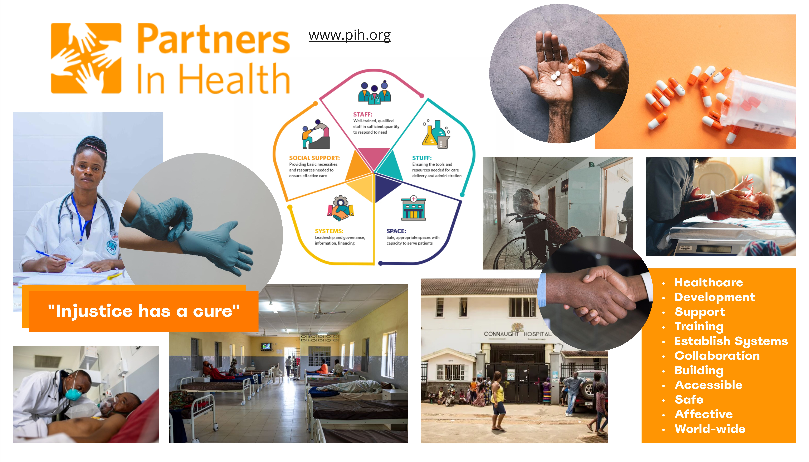
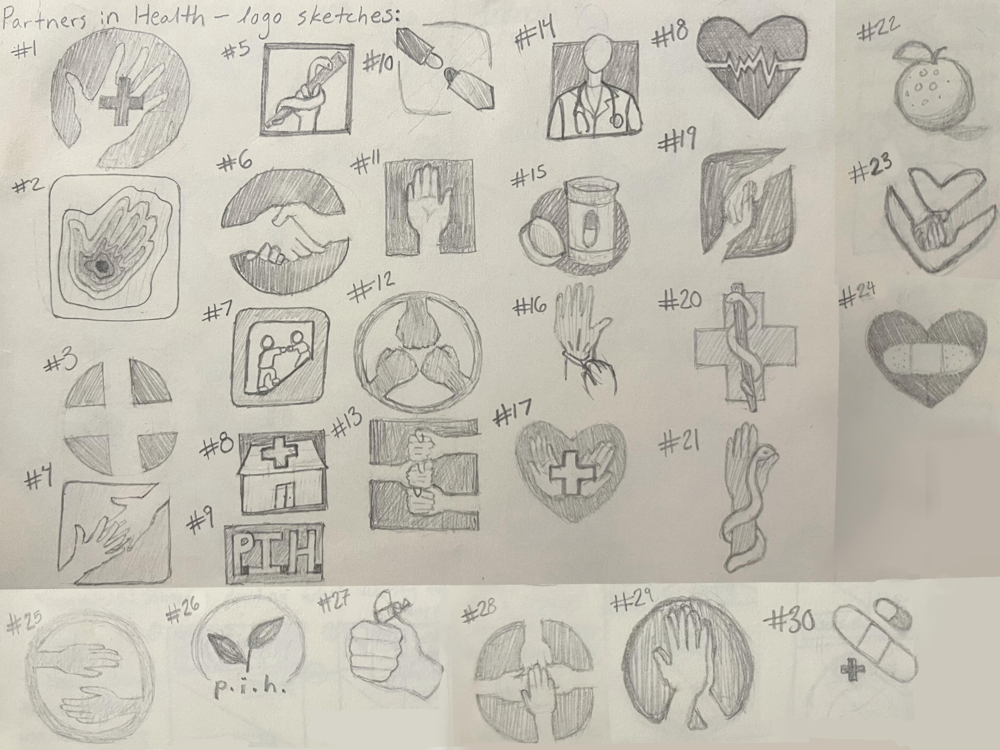
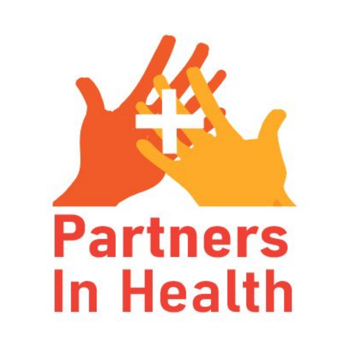

Research

The Awesome Socks Club’s donations go to the the Maternal Center of Excellence in Sierra Leone, a vital maternal care center in this area where there is a “maternal mortality epidemic in which a woman’s lifetime risk of dying in pregnancy or childbirth is 1 in 17,” according to the Partners in Health website. I went on to learn though that the story of Sierra Leone is a mere footnote in the actual reach of the organization. Partners in Health fights against any and every kind of medical emergency, and its locations are world-wide, ranging from Mexico to Lesotho to Kazakhstan. I looked further into the organization by watching their documentary and reading through some of the stories and statistics on their website.
Through this process, I learned that this organization inserts themselves into any story they are needed. Partners in Health focuses on the fact that modern science is not available to everyone because of the unjust systems that we exist within; their nonprofit works to bring developed healthcare to people that would not otherwise have access to these basic treatments. Partners in Health does not let itself be defined by any one thing. I started to realize that this is what makes the nonprofit so important and so inspiring – but it also makes designing a logo for them difficult. How could I take such a limited genre and use it to tell such an epic tale of victory, tragedy, community and injustice?
The Planning Process

Mood Board

Logo Sketches

My design process started with a mood board to gather all my thoughts. I used the software Miro to put together a collage of images and concepts that I thought encompassed Partners in Health’s initiatives, motives, and accomplishments. I also included the current logo and color scheme of the organization so that I could incorporate those familiar elements into my design. I liked the original logo’s use of hands to show community and outreach, but I felt that it came across too vague. The original logo could have represented anything from a children’s summer camp to an art workshop. So, in the mood board I played with this idea of how a “helping hand” might come up in the context of healthcare specifically. This process helped me see what my version of the logo needs to encompass and gave me a jumping-off point.
I then moved on to sketching out my initial ideas on paper. By designing on pencil and paper first, I could quickly try a great variety of possibilities before going into any sort of time-heavy design process. Plus, being in black and white, sketching let me make sure the logo would look good in a monochromatic setting, such as if it is printed out with a non-color printer. After getting out 30 different ideas using different concepts, I found a few features that I wanted to include in the final design. I liked the look of overlapping hands to show partnership, and the inclusion of a symbol to represent health. I landed on the Western cross, as it has become the most universal healthcare symbol, and it caters to its audience of donors, which its website shows us is largely English-speaking.
Final Design

I ended up combining the sketches numbered one and four. The first sketch incorporated the cross in a way I liked, and the fourth sketch sent the message of collaboration I wanted to emphasize. I changed the original logo’s four hands to only two to de-clutter it while keeping the collaborative messaging. I overlapped the hands because the separation of the shapes created a feeling of yearning as it put focus on the space in between, rather than focusing on the interaction.
Putting the symbol of healthcare amidst this interaction felt like the perfect visual interpretation of the organization’s name, Partners in Health. With these ideas developed, I moved on to working in Adobe Illustrator. I finalized the design with a darker color choice that provided proper contrast to the white background the organization was using, while still incorporating the old color in the forefront hand.
Final Takeaways
This was a planning-heavy process. The actual making of the logo took me under thirty minutes, but it was the decisions that influenced my design that was such a valuable experience. A logo represents a company, so I need to first understand the company entirely, and have a full understanding of the context the logo will be used in.
This project used my knowledge in content strategy, rhetoric and graphic design. It gave me experience in the combination and inter-play of these elements in their execution. Something like color choice, for example, needs to take into account the brand of the company, the effect of the color on the senses, and what looks best with the visual design. I learned in this project how to balance these three aspects – not just optimizing for one.
This site was created by Rachel Hoffman using HTML and CSS.